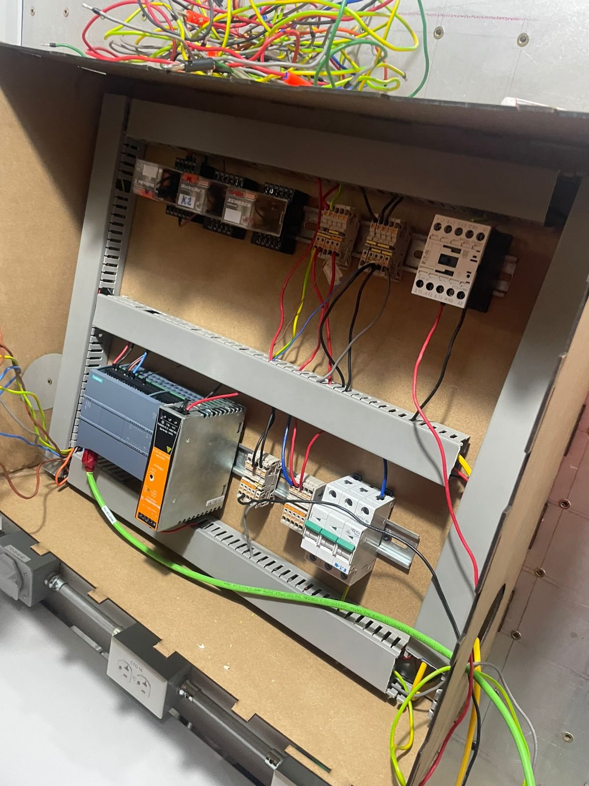

Práctica 8: Sensores industriales
Objetivo
Conocer, investigar e identificar el funcionamiento de los sensores industriales y su conexión con PLC.
Introducción
En la actualidad, los sensores industriales desempeñan un papel fundamental en la automatización y el control de procesos dentro de la industria moderna. Estos dispositivos son capaces de captar variaciones en el entorno, como temperatura, presión, posición, o nivel de líquidos, y convertir estas mediciones en señales útiles para los sistemas de control y monitoreo. Su implementación no solo optimiza la producción y asegura la calidad de los productos, sino que también mejora la seguridad en las operaciones y permite una respuesta ágil ante cambios en las condiciones de los procesos. La importancia de los sensores industriales ha crecido significativamente con el avance de la Industria 4.0 y el Internet de las Cosas Industrial (IIoT), donde la interconexión de equipos permite recopilar datos en tiempo real para análisis predictivos y mantenimiento preventivo. De esta manera, los sensores industriales son clave para alcanzar una producción eficiente y competitiva en entornos industriales altamente automatizados.
Materiales
- Fuente de alimentacion
- Botones
- LED's
- Contactos
- Relevadores
- Sensor
Desarrollo
Armado de manera fisica
Dos sensores encendido y apagado
Reportes de practica
Descargar PDF del reporte de Practica 8
Conclusiones
Los sensores industriales son componentes esenciales para la automatización y el control eficiente de los procesos industriales, desempeñando un papel crucial en la recopilación de datos precisos y en tiempo real. Gracias a su variedad de tipos y principios de funcionamiento, pueden adaptarse a diversas aplicaciones y satisfacer las necesidades de sectores como manufactura, logística, energía y salud. Su integración con sistemas avanzados de control y comunicación permite mejorar la precisión, calidad y seguridad de los procesos, además de facilitar la toma de decisiones basada en datos. Con el avance de la Industria 4.0 y el IoT Industrial, los sensores industriales evolucionan hacia tecnologías más inteligentes, capaces de realizar diagnósticos y autogestión, lo que aumenta la eficiencia y reduce el riesgo de fallos en los sistemas. En conclusión, el desarrollo y aplicación de sensores en la industria continúa siendo un área de gran impacto, promoviendo la innovación y competitividad de las empresas en un entorno cada vez más automatizado y digitalizado.
Volver a inicio